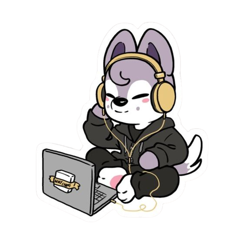
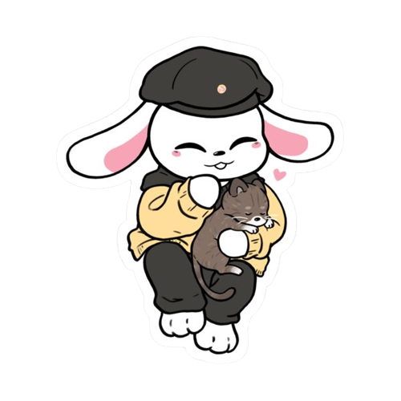
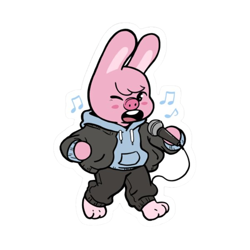
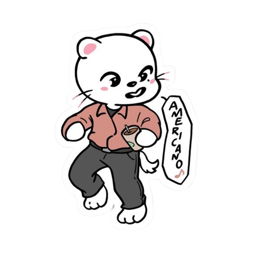
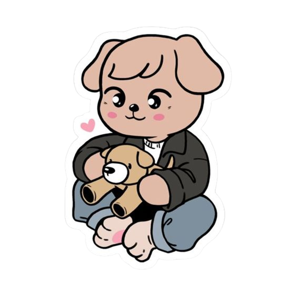
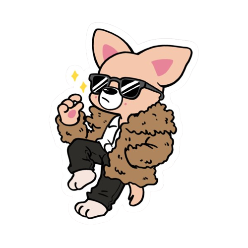

<3 sobre os skzoo <3
.png)
O que é e como surgiu o Skzoo?
O Skzoo é um projeto do Stray Kids no qual cada membro é representado por um animal ou por uma forma híbrida. O primeiro teaser com os personagens foi lançado em 2020 e, logo em seguida, em 2021, foi lançada a versão Skzoo de “God’s Menu”.
<3 Apresentação <3

Wolf Chan
O Wolf Chan representa um lobo e também é o mascote do Bang Chan. Foi levado em conta que o líder do grupo frequentemente usa um emoji de lobo em suas mensagens para o fandom.

Leebit
Leebit é um coelho que representa o Lee know. Sua aparência mais rígida veio da descrição da personalidade do membro pelos fãs.

Dwaekki
Changbin durante um programa de televisão fez um animal de argila que parecia um híbrido de porco e coelho. E assim surgiu o Dwaekki, mistura de “dwaeji” (porco) e “tokki” (coelho) em coreano.

Jiniret
Jiniret é a mistura do apelido de Hyunjin “Jinnie” com “ferret” (furão em inglês). Segundo os fãs, esse seria o animal perfeito para representar o membro uma vez que sua altura e características lembram o de um furão.
.png)
Han Quokka
O Han foi por muitas vezes comparado com um esquilo, tanto pelos membros quanto pelo fandom, principalmente por conta de suas adoráveis bochechas. E foi assim que surgiu o Han Quokka.

PuppyM
As pessoas frequentemente comparam o Seungmin a um cachorrinho devido aos seus doces olhos e personalidade gentil. Por isso, foi assim que surgiu o PuppyM, o seu mascote.

FoxI.Ny
Por fim, o FoxI.Ny é personagem que representa o I.N., no qual sua aparência lembra, para os fãs e para os membros do grupo, a de uma raposa.